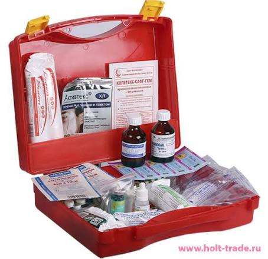

For your home and loved ones · Product concept · Preparing for launch
Store clearlyA place for every item
Find more easilyColour, text and symbols
Prepare in advanceA checklist and regular reviews
Care for your familyA system everyone can understand
01 / An honest beginning
I never planned to build a first-aid kit. Until my wife needed one.
The personal experience behind SAFEBOX.
3minutes
According to the founder, his wife’s condition deteriorated within just a few minutes.
Project illustration, not a photograph of the incident.
“My wife became unwell right in my arms. Her limbs and mouth cramped, she had spasms, and breathing became difficult. It all happened in about three minutes.”
“I associated it with severe dehydration. We had Zyrtec at home; I gave it to her, and she felt better afterwards. That is how I experienced and remember that moment.”
That experience made me realise how important it is to have the right supplies within reach. But putting medicines in a box is not enough. You need to know where everything is, read the labels, and find the information you need.
Even after that incident, I did not immediately organise our home medicine kit. The danger passes, and you put it off again.
That is how SAFEBOX began: organised storage, visible sections, large labels, a guide and a QR entry point. A system that the whole family can understand.
Another story from our familyAt night. At home. Suddenly.
“Dad, I can’t breathe.”
Words you never forget.
The founder’s personal experience
What if we had nothing at home?
“One night, my son suddenly started coughing, without stopping. Then he said: ‘Dad, I can’t breathe.’ He was coughing so hard it felt as though he would cough his lungs out.
Luckily, we already had a nebuliser and Pulmicort at home. We had bought them three years earlier on a doctor’s advice. What if we hadn’t?”
The founder describes this as an episode of croup. It is another reason behind SAFEBOX: discuss the supplies your family may need with a doctor in advance, know where they are, and keep individual instructions close by.
02 / The people closest to you
The person who needs help may be someone you love.
01 / SAFEBOX
Your partner
The person beside you every day.
02 / SAFEBOX
Your child
Preparation begins before a frightening night.
03 / SAFEBOX
Your parents
Make the location of supplies and instructions clear.
The founder’s perspective: when a loved one’s safety is at stake, even 10,000–20,000 roubles can feel secondary. This is a reflection on preparedness, not a product price or a promise of an outcome.
03 / Compare the approach
A container for medicines. Or an organised system.
CONVENTIONAL STORAGE
A box is a starting point

You create the layout, organise the instructions and keep track of supplies yourself.
SAFEBOX CONCEPT
Storage, labels and information
Visible sections, large labels and a shared structure across the case, printed materials and digital resources.
Original concept presentation in Russian. Diagrams are illustrative, not clinical evidence or a guarantee of response times or outcomes. Medicine labels and storage formats shown are not prescriptions or confirmed package contents.
Product gallery
Explore the formats.
Concept visuals with original Russian labels; not finished retail products.
A proposed play-doctor range and a future charitable programme. Read more →
03 / SAFEBOX
Stories and feedback
Explore the founder’s experiences and help shape the system. Read the stories →
Before you choose
Good questions deserve clear answers.
Is SAFEBOX a medicine or a storage system?
SAFEBOX is a concept for organising medicines and related information. Medicines are selected individually with a healthcare professional and purchased separately.
Is it suitable for someone without medical training?
The navigation is designed to make storage easier to understand. It does not replace first-aid training, a diagnosis or professional medical help.
Can I buy it and order medicines in one click?
Sales, payments and pharmacy ordering are not connected yet. The current site helps you explore the concept and prepare a checklist.
What if there is no phone or internet?
The concept includes printed information. Online videos and QR resources need an internet connection. Keep your individual prescriptions and key contacts available offline.
A clinician-reviewed list, pack quantities and total based on pharmacy offers. Medicines, delivery and service fees are shown separately. Partners and ordering are not connected yet.
Storage, training, printed materials and medicines are listed separately. A booklet, marker, cards or paid access are not currently promised as part of every box. Prices and bundles will be confirmed before sales.